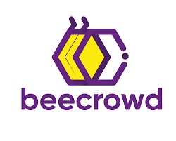
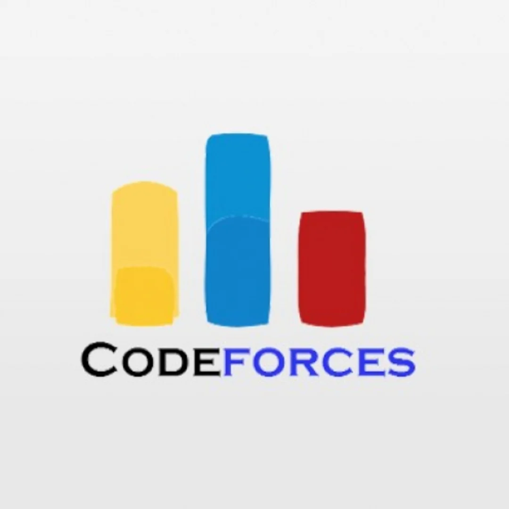
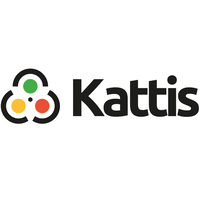

Competitive programming is not just a hobby; it's the beating heart of my intellectual journey. I still vividly remember the moment I stumbled upon it during my first year of undergrad – an enchanting world where algorithms and data structures wove intricate puzzles waiting to be solved. From that instant, I was hooked. Days melted into nights as I lost myself in the thrill of deciphering challenges, often forgetting to eat or sleep. The sense of accomplishment that came with each solved problem was unparalleled, a rush that fueled my determination to dive deeper into this mesmerizing realm. Competitive programming became more than a pastime; it was a way of life that demanded dedication, creativity, and relentless problem-solving. As years passed, my love for it only grew, transforming me into a coder who finds solace and exhilaration in the dance of bits and bytes.
Profile Links:
  